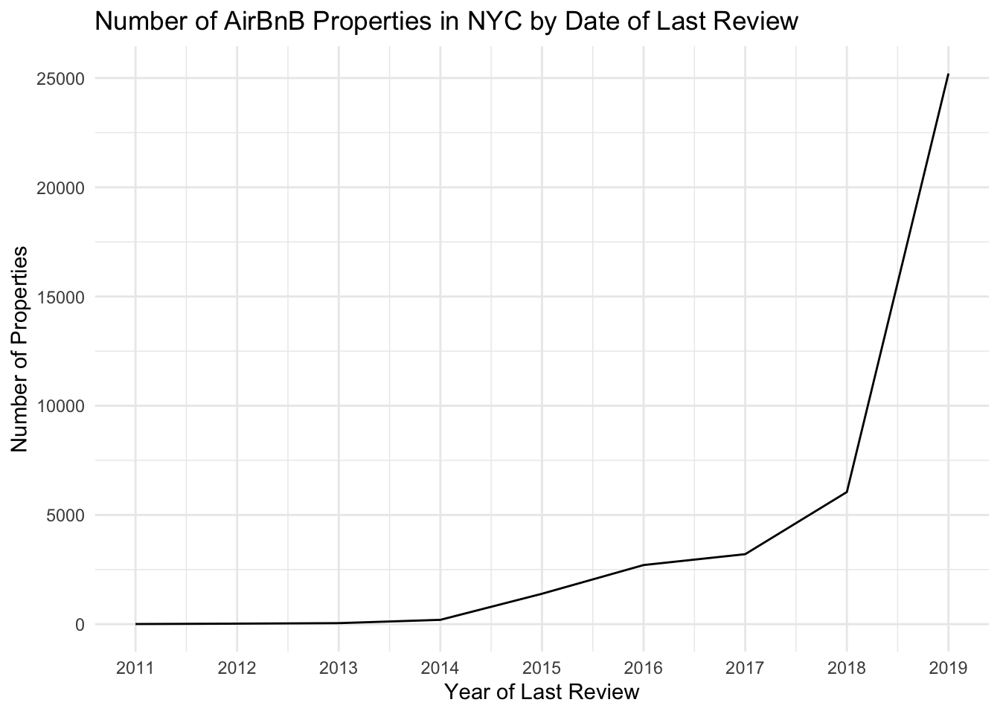
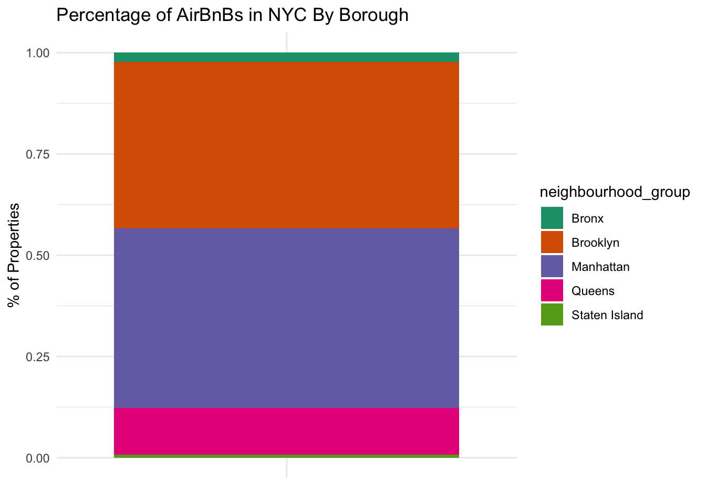
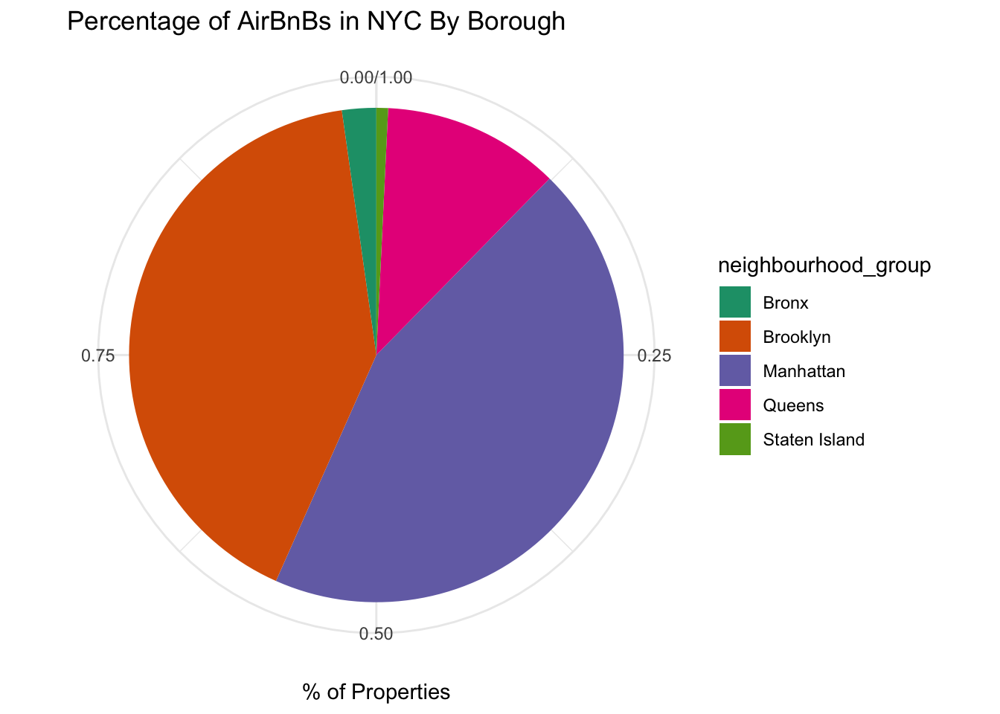

library(tidyverse)
knitr::opts_chunk$set(echo = TRUE, warning=FALSE, message=FALSE)Challenge 6
challenge_6
air_bnb
ggplot2
audrey_bertin
Visualizing Time and Relationships
Challenge Overview
For this challenge, I’ll be reading in the AB_NYC_1019.csv ⭐⭐⭐⭐⭐ data.
This was the dataset I read for challenge 5, so I will be continuing to visualize it and add on to what I discovered in the last challenge.
For the data overview below, I will be reproducing the steps from challenge 5 so that the data is in the same format.
The Data
airbnb <- readr::read_csv("_data/AB_NYC_2019.csv")glimpse(airbnb)Rows: 48,895
Columns: 16
$ id <dbl> 2539, 2595, 3647, 3831, 5022, 5099, 512…
$ name <chr> "Clean & quiet apt home by the park", "…
$ host_id <dbl> 2787, 2845, 4632, 4869, 7192, 7322, 735…
$ host_name <chr> "John", "Jennifer", "Elisabeth", "LisaR…
$ neighbourhood_group <chr> "Brooklyn", "Manhattan", "Manhattan", "…
$ neighbourhood <chr> "Kensington", "Midtown", "Harlem", "Cli…
$ latitude <dbl> 40.64749, 40.75362, 40.80902, 40.68514,…
$ longitude <dbl> -73.97237, -73.98377, -73.94190, -73.95…
$ room_type <chr> "Private room", "Entire home/apt", "Pri…
$ price <dbl> 149, 225, 150, 89, 80, 200, 60, 79, 79,…
$ minimum_nights <dbl> 1, 1, 3, 1, 10, 3, 45, 2, 2, 1, 5, 2, 4…
$ number_of_reviews <dbl> 9, 45, 0, 270, 9, 74, 49, 430, 118, 160…
$ last_review <date> 2018-10-19, 2019-05-21, NA, 2019-07-05…
$ reviews_per_month <dbl> 0.21, 0.38, NA, 4.64, 0.10, 0.59, 0.40,…
$ calculated_host_listings_count <dbl> 6, 2, 1, 1, 1, 1, 1, 1, 1, 4, 1, 1, 3, …
$ availability_365 <dbl> 365, 355, 365, 194, 0, 129, 0, 220, 0, …This dataset has 48,895 rows and 16 columns. It contains information on different AirBnB properties located in New York City, NY.
Each row represents a single property in the city. For each property, we have the following information;
id: unique identifier for the propertyname: descriptive name shown on the AirBnB website that customers see when clicking on the propertyhost_id: unique identifier for the host of the propertyhost_name: first name of the property hostneighbourhood_group: borough name where property is locatedneighborhood: neighborhood within the burough (more detailed location)latitude/longitude: geographical coordinates of propertyroom_type: what type of property is being booked (private room in shared home, a whole home/apartment, etc)price: nightly price, presumably in USDminimum_nights: minimum length of staynumber_of_reviews: total number of reviews for the property on AirBnB so farlast_review: date of last reviewreviews_per_month: average number of reviews left for the property each monthcalculated_host_listings_count: number of listings/properties that this specific host has on AirBnB overallavailability_365: number of nights in the year that the property is available for booking on AirBnB
Room types include:
unique(airbnb$room_type)[1] "Private room" "Entire home/apt" "Shared room" All boroughs appear to be included:
unique(airbnb$neighbourhood_group)[1] "Brooklyn" "Manhattan" "Queens" "Staten Island"
[5] "Bronx" For each borough, we have the following count of neighborhoods and properties:
airbnb %>%
group_by(neighbourhood_group) %>%
summarize(n_properties = n(), n_neighborhoods = n_distinct(neighbourhood)) %>%
arrange(desc(n_properties))Most of the properties are located in Manhattan and Brooklyn, with significantly fewer in Queens, the Bronx, and Staten Island. Within each borough, we have a few dozen neighborhoods covered, so this data seems to have pretty good coverage of the city with no obvious big missing areas of data.
Tidy Data
Data is already in a tidy format, so no pivoting is necessary. Each row represents a single property, which can’t be broken down into a longer format.
However, we can mutate a few of the variables to get them into a better format for visualization. Specifically, the following variables should be turned into factors:
neighbourhood_groupneighbourhoodroom_type
There are a few other modifications that can be made (e.g. converting some doubles to integers), but they are not necessary for the purpose of this visualization.
We do this mutation below:
airbnb_tidy <- airbnb %>%
mutate(neighbourhood_group = as_factor(neighbourhood_group),
neighbourhood = as_factor(neighbourhood),
room_type = as_factor(room_type))Additional Mutation
In order to create variables for time-dependent visualization, it could help to do some additional steps to our data beyond what was done for challenge 5.
The only time related variable we have is last_review which has a YYYY-MM-DD format. To get something useful/interesting out of this date, it would help to be able to group these dates into larger categories.
For this example, we’ll create a YEAR-only version of the date, so that we can then group by year of last review to produce a graph and compare properties over time.
Below, we create this variable:
airbnb_tidy <- airbnb_tidy %>%
rowwise() %>%
mutate(year_last_review = year(last_review))unique(airbnb_tidy$year_last_review) [1] 2018 2019 NA 2017 2011 2016 2012 2015 2013 2014Time Dependent Visualization
For our time dependent visualization, we can graph the number of unique properties by last review date. To do this, we’ll need to create a summary using group by with our new variable.
airbnb_tidy %>%
group_by(year_last_review) %>%
summarize(n_properties = n_distinct(id)) %>%
filter(!is.na(year_last_review)) %>%
ggplot(aes(x= year_last_review, y = n_properties)) +
geom_line() +
xlab("Year of Last Review") +
ylab("Number of Properties") +
ggtitle("Number of AirBnB Properties in NYC by Date of Last Review") +
scale_x_continuous(breaks = c(2011, 2012, 2013, 2014, 2015, 2016, 2017, 2018, 2019), labels = c("2011", "2012", "2013", "2014", "2015", "2016", "2017", "2018", "2019")) +
theme_minimal()
With this graph, we can see that the vast majority of properties have a last review date in 2019, the most recent available year. There is also a clear pattern over time, where there are very few properties with early last review dates, and as the years get more recent, there are many more properties with a last review date in that year. This indicates that the dataset is mostly newer properties versus properties that have not been rented in a long time.
Visualizing Part-Whole Relationships
In challenge 5, we calculated the number of distinct properties by neighborhood (borough) in NYC.
airbnb_by_neighborhood <- airbnb %>%
group_by(neighbourhood_group) %>%
summarize(n_properties = n()) %>%
arrange(desc(n_properties))
airbnb_by_neighborhoodIn this challenge, we can visualize these results, looking at the number of properties by neighborhood. A stacked bar chart can do this for us:
bar_graph <- airbnb_by_neighborhood %>%
ggplot(aes(x="", y=n_properties, fill=neighbourhood_group)) +
geom_col(position="fill") +
scale_fill_brewer(palette = "Dark2") +
xlab(NULL) +
ylab("% of Properties") +
ggtitle("Percentage of AirBnBs in NYC By Borough") +
theme_minimal()
bar_graph
We can also convert this to a pie chart by adding one line of code:
bar_graph + coord_polar("y", start=0)